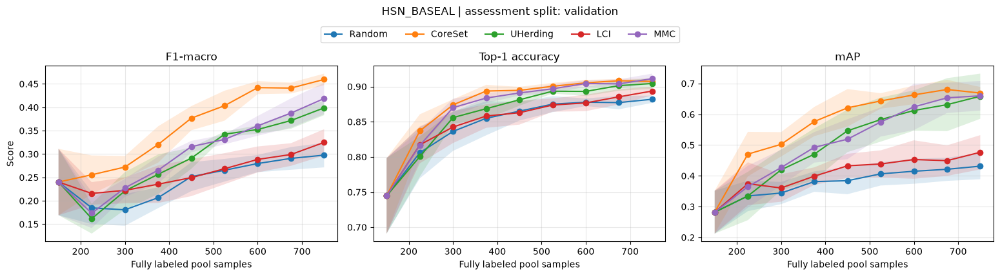

Pool-based Multilabel Active Learning - Getting Started#
This notebook introduces a compact multilabel active learning workflow with scikit-activeml. We use BirdSet embeddings as a realistic feature pool, but the focus stays on the workflow itself: how multilabel targets are represented, how a classifier and query strategies are connected, and how to read the resulting learning curves.
You will learn:
how to prepare BirdSet embeddings and multilabel targets for
scikit-activeml,how
MISSING_LABELrepresents unknown labels in the unlabeled pool,how to compare task-agnostic and multilabel-specific query strategies in one active-learning loop,
how to read the result plot and the final metric summary, including the caveats of multilabel metrics on a sparsely labeled data set.
Google Colab Note: If the notebook fails to run after installing the needed packages, try to restart the runtime (Ctrl + M) under Runtime -> Restart session.

Notebook Dependencies
Uncomment the following cell to install all dependencies for this tutorial.
Data and runtime: the notebook reuses an existing BirdSet_BASEAL directory or downloads the official archive (about 215 MiB, 303 MB extracted) from the Zenodo record when the data is missing. Only the HSN_BASEAL subset (69 MB) is used below. A complete run takes about two minutes on a GPU.
Citation: the bundled exports are derived from BirdSet and were embedded with Perch v2. If you use this data, cite BirdSet, cite the Perch 2.0 model/paper, and acknowledge the upstream source record listed in the subset’s metadata.csv.
[1]:
# !pip install scikit-activeml[opt] torch tqdm
General#
In multilabel classification, each sample is associated with a binary indicator vector such as [1, 0, 1, 0, ...] because several classes may be active at the same time.
scikit-activeml does not guess this structure. Classifiers and query strategies receive target_type="multi-label" together with a per-output class vocabulary classes=[[0, 1], ..., [0, 1]], i.e. every target dimension is its own binary label. Two rules follow from the resolved target semantics and hold throughout this notebook:
a row of
yis either fully labeled or fully unlabeled, i.e. a partially annotated sample is not representable,unknown rows are filled with
MISSING_LABELand count as one unlabeled sample, not asn_classesunlabeled entries.
Details on target resolution are documented in Target and Annotation Semantics.
Inside the active-learning loop, we keep two versions of the pool labels:
Y_train: the full multilabel targets, which act as the oracle,Y_known: the currently revealed labels, where unknown rows are stored asMISSING_LABEL.
Each cycle follows the same pattern: fit on the currently known labels, query the next batch, reveal the true labels for that batch, refit the classifier, and evaluate on a fixed assessment split.
Imports and Runtime Setup#
The imports below show the core pieces of the tutorial: BirdSet data loading, multilabel metrics, a SkorchClassifier, and five pool-based query strategies.
[2]:
import csv
import json
import warnings
import urllib.request
import zipfile
from pathlib import Path
import matplotlib as mpl
import matplotlib.pyplot as plt
import numpy as np
import torch
from tqdm import tqdm
from sklearn.ensemble import RandomForestClassifier
from sklearn.metrics import average_precision_score, f1_score
from skactiveml.classifier import SkorchClassifier, SklearnClassifier
from skactiveml.pool import (
CoreSet,
LabelCardinalityInconsistency,
MaxLossReductionMaxConfidence,
RandomSampling,
SubSamplingWrapper,
UHerding,
)
from skactiveml.utils import MISSING_LABEL, call_func, is_labeled
from skorch.callbacks import LRScheduler
from torch import nn
from torch.optim.lr_scheduler import CosineAnnealingLR
warnings.filterwarnings("ignore")
mpl.rcParams["figure.facecolor"] = "white"
device = "cuda" if torch.cuda.is_available() else "cpu"
print(f"Using device: {device}")
Using device: cuda
Configuration#
These are the few parameters worth changing first:
DATA_ROOTpoints to an existing BirdSet export if you already have one,DATASET_NAMEselects one multilabel pool (HSN_BASEAL,POW_BASEAL, orUHH_BASEAL),ASSESSMENT_SPLITnames the held-out split; the bundled exports providetrainandvalidationonly,INITIAL_LABELS,QUERY_BATCH_SIZE, andN_CYCLESdefine the annotation budget,SELECTED_STRATEGIESlets you swap query strategies without touching the loop.
[3]:
DATA_ROOT = Path("BirdSet_BASEAL")
DATASET_NAME = "HSN_BASEAL"
ASSESSMENT_SPLIT = "validation"
INITIAL_LABELS = 150
QUERY_BATCH_SIZE = 75
N_CYCLES = 8
N_REPETITIONS = 5
BASE_SEED = 42
SEEDS = range(BASE_SEED, BASE_SEED + N_REPETITIONS)
SELECTED_STRATEGIES = ["Random", "CoreSet", "UHerding", "LCI", "MMC"]
LABELS_FILENAME = "labels.csv"
EMBEDDING_SUBDIR = Path("embeddings") / "perch_v2"
LABEL_SEPARATOR = ";"
ZENODO_RECORD_URL = "https://zenodo.org/api/records/19340660"
ZENODO_ARCHIVE_NAME = "BirdSet_BASEAL.zip"
MODEL_MAX_EPOCHS = 15
MODEL_BATCH_SIZE = 32
MODEL_LEARNING_RATE = 0.01
MAX_CANDIDATES = 2000
print(f"Dataset: {DATASET_NAME}")
print(f"Assessment split: {ASSESSMENT_SPLIT}")
print(f"Initial labels: {INITIAL_LABELS}")
print(f"Batch size: {QUERY_BATCH_SIZE}")
print(f"Cycles: {N_CYCLES}")
print(f"Repetitions: {N_REPETITIONS}")
print(f"Strategies: {SELECTED_STRATEGIES}")
Dataset: HSN_BASEAL
Assessment split: validation
Initial labels: 150
Batch size: 75
Cycles: 8
Repetitions: 5
Strategies: ['Random', 'CoreSet', 'UHerding', 'LCI', 'MMC']
Data Preparation#
The next cell deals only with data availability: it checks whether the requested BirdSet bundle is already present and otherwise resolves the BirdSet_BASEAL.zip download URL from the Zenodo record and extracts the archive.
[4]:
def ensure_birdset_baseal_data(dataset_name, data_root=DATA_ROOT):
"""Download and extract the BirdSet export if it is not available yet."""
dataset_dir = data_root / dataset_name
if (dataset_dir / LABELS_FILENAME).is_file() and (
dataset_dir / EMBEDDING_SUBDIR
).is_dir():
print(f"Using existing BirdSet export: {dataset_dir}")
return dataset_dir
record = json.load(urllib.request.urlopen(ZENODO_RECORD_URL))
file_info = next(
f for f in record["files"] if f["key"] == ZENODO_ARCHIVE_NAME
)
archive_path = data_root.parent / ZENODO_ARCHIVE_NAME
with tqdm(unit="B", unit_scale=True, desc=ZENODO_ARCHIVE_NAME) as progress:
def report(n_blocks, block_size, total_size):
progress.total = total_size
progress.update(n_blocks * block_size - progress.n)
urllib.request.urlretrieve(
file_info["links"]["self"], archive_path, reporthook=report
)
with zipfile.ZipFile(archive_path) as archive:
archive.extractall(data_root.parent)
archive_path.unlink()
print(f"BirdSet export is ready at: {dataset_dir}")
return dataset_dir
Load the Multilabel Pool#
This cell turns the BirdSet export into the arrays used by scikit-activeml. X_train and Y_train form the pool, X_assessment and Y_assessment stay fixed for evaluation, and the labels are encoded as binary indicator vectors.
Note the label sparsity reported below: on HSN_BASEAL, a sample carries about 0.52 labels on average and less than half of the samples carry any positive label at all. This shapes the metrics in the next section.
[5]:
def load_birdset_pool(
dataset_name, data_root=DATA_ROOT, assessment_split=ASSESSMENT_SPLIT
):
"""Load embeddings and multilabel targets of one BirdSet pool."""
dataset_dir = data_root / dataset_name
with (dataset_dir / LABELS_FILENAME).open(newline="") as fp:
rows = [
row
for row in csv.DictReader(fp)
if row["split"] in ("train", assessment_split)
]
row_labels = [
[
name.strip()
for name in row["label"].split(LABEL_SEPARATOR)
if name.strip()
]
for row in rows
]
class_names = np.asarray(
sorted({name for names in row_labels for name in names}), dtype=object
)
class_to_index = {name: idx for idx, name in enumerate(class_names)}
X = np.stack(
[
np.load(dataset_dir / EMBEDDING_SUBDIR / row["filename"])
for row in rows
]
).astype(np.float32)
Y = np.zeros((len(rows), len(class_names)), dtype=np.uint8)
for sample_idx, names in enumerate(row_labels):
Y[sample_idx, [class_to_index[name] for name in names]] = 1
is_train = np.asarray([row["split"] == "train" for row in rows])
if not is_train.any() or is_train.all():
raise ValueError(
f"{dataset_name} must contain train and {assessment_split} rows"
)
return {
"dataset_name": dataset_name,
"assessment_split": assessment_split,
"X_train": X[is_train],
"Y_train": Y[is_train],
"X_assessment": X[~is_train],
"Y_assessment": Y[~is_train],
"n_features": X.shape[1],
"n_classes": len(class_names),
"class_names": class_names,
}
def print_dataset_summary(dataset):
"""Print pool sizes and the label sparsity of a loaded data set."""
split = dataset["assessment_split"]
n_labels_train = dataset["Y_train"].sum(axis=1)
n_labels_assessment = dataset["Y_assessment"].sum(axis=1)
print(dataset["dataset_name"])
print(f" pool samples: {len(n_labels_train)}")
print(f" assessment samples: {len(n_labels_assessment)} ({split})")
print(f" features: {dataset['n_features']}")
print(f" classes: {dataset['n_classes']}")
print(
f" mean labels/sample: "
f"train={n_labels_train.mean():.2f}, "
f"{split}={n_labels_assessment.mean():.2f}"
)
print(
f" samples with >=1 label: "
f"train={np.mean(n_labels_train > 0):.1%}, "
f"{split}={np.mean(n_labels_assessment > 0):.1%}"
)
ensure_birdset_baseal_data(DATASET_NAME)
dataset = load_birdset_pool(DATASET_NAME)
print_dataset_summary(dataset)
Using existing BirdSet export: BirdSet_BASEAL/HSN_BASEAL
HSN_BASEAL
pool samples: 6600
assessment samples: 1800 (validation)
features: 1536
classes: 19
mean labels/sample: train=0.52, validation=0.52
samples with >=1 label: train=44.9%, validation=44.7%
Metrics and Classifier#
We keep the evaluation helpers and the classifier close together because they define what the active learner is trying to optimize. Three metrics are tracked, and each needs one caveat on this data set:
F1-macro thresholds the per-label sigmoids at 0.5 and averages the per-class F1 scores. Several classes have only a handful of positive samples in the assessment split, so this metric reacts strongly to a few rare classes and varies noticeably across repetitions.
Top-1 accuracy checks whether the highest-scoring label of a sample is actually active. It is computed only on the samples that carry at least one positive label; including the label-free samples would cap the metric at their share (about 45 % here) and make a good model look bad.
mAP is the macro-averaged average precision over all classes with at least one positive sample in the assessment split. It is threshold-free and therefore the most stable of the three.
The important classifier detail is classes=[[0, 1], ..., [0, 1]] together with target_type="multi-label", which tells scikit-activeml that every target dimension is a binary label. forward_outputs additionally exposes the logits and the hidden representation, which the query strategies below consume.
[6]:
def topk_accuracy(probas, targets, topk=1):
"""Top-k accuracy on samples with at least one positive label."""
has_label = targets.sum(axis=1) > 0
probas, targets = probas[has_label], targets[has_label]
topk_idx = np.argpartition(-probas, kth=topk - 1, axis=1)[:, :topk]
row_ids = np.arange(targets.shape[0])[:, None]
return float(np.mean(np.any(targets[row_ids, topk_idx], axis=1)))
def macro_map_valid_classes(y_true, y_score):
"""Macro-average the average precision over non-empty classes."""
valid_scores = [
average_precision_score(y_true[:, class_idx], y_score[:, class_idx])
for class_idx in range(y_true.shape[1])
if y_true[:, class_idx].sum() > 0
]
return float(np.mean(valid_scores)) if valid_scores else np.nan
METRIC_FUNCS = {
"F1-macro": lambda y_true, y_pred, y_proba: f1_score(
y_true, y_pred, average="macro", zero_division=0
),
"Top-1 accuracy": lambda y_true, y_pred, y_proba: topk_accuracy(
y_proba, y_true, topk=1
),
"mAP": lambda y_true, y_pred, y_proba: macro_map_valid_classes(
y_true, y_proba
),
}
class ClassificationModule(nn.Module):
def __init__(self, n_features, n_classes, n_hidden_units=128):
super().__init__()
self.linear_1 = nn.Linear(n_features, n_hidden_units)
self.bn = nn.BatchNorm1d(n_hidden_units)
self.activation = nn.ReLU()
self.linear_2 = nn.Linear(n_hidden_units, n_classes)
def forward(self, x):
emb = self.activation(self.bn(self.linear_1(x)))
logits = self.linear_2(emb)
return logits, emb
def build_classifier(dataset, random_state):
"""Create a multilabel MLP probing classifier on frozen embeddings."""
return SkorchClassifier(
module=ClassificationModule,
criterion=nn.BCEWithLogitsLoss,
sample_dtype=np.float32,
forward_outputs={
"proba": (0, nn.Sigmoid()),
"logits": (0, None),
"emb": (1, None),
},
neural_net_param_dict={
"module__n_features": dataset["n_features"],
"module__n_classes": dataset["n_classes"],
"max_epochs": MODEL_MAX_EPOCHS,
"batch_size": MODEL_BATCH_SIZE,
"lr": MODEL_LEARNING_RATE,
"optimizer": torch.optim.RAdam,
"callbacks": [
(
"lr_scheduler",
LRScheduler(
policy=CosineAnnealingLR, T_max=MODEL_MAX_EPOCHS
),
)
],
"verbose": 0,
"device": device,
"train_split": False,
"iterator_train__shuffle": True,
"iterator_train__drop_last": True,
},
# Each output dimension is its own binary label.
classes=[[0, 1] for _ in range(dataset["n_classes"])],
missing_label=MISSING_LABEL,
random_state=random_state,
target_type="multi-label",
)
Query Strategies and Active-learning Loop#
Each strategy sees the same pool, the same initial labels, and the same classifier architecture. Two groups are compared:
task-agnostic strategies that work for any target type:
RandomSamplingas the baseline,CoreSetas a pure diversity criterion, andUHerding, which combines uncertainty with coverage,multilabel-specific strategies:
LabelCardinalityInconsistency(LCI), which prefers samples whose predicted label count disagrees with the observed label cardinality, andMaxLossReductionMaxConfidence(MMC), which pairs the multilabel classifier with a label-cardinalitydiscriminator.
Two implementation details are worth pointing out:
SubSamplingWrapperdraws at mostMAX_CANDIDATES(2000) of the unlabeled samples per cycle, i.e. of 6450 in the first and 5850 in the last cycle. Because ofexclude_non_subsample=True, the remaining unlabeled samples are hidden from the wrapped strategy, which keeps the runtime of the coverage-based strategies manageable. Passingrandom_statemakes that subsample reproducible and identical across strategies.CoreSetoperates on the classifier’s hidden representation rather than on the raw Perch embeddings;embed_samples_funcperforms that mapping. The classifier is already fitted whenqueryis called, so all strategies are invoked withfit_clf=False.
call_func forwards only those keyword arguments that the wrapped strategy actually accepts, which is why the same call works for RandomSampling and for MMC.
[7]:
def embed_with_classifier(clf):
"""Return a function mapping samples to the classifier's embeddings."""
def embed_samples_func(X):
return clf.predict(X, extra_outputs="emb")[1]
return embed_samples_func
def build_query_strategy(strategy_name, seed, clf):
"""Create a sub-sampling strategy and its extra `query` arguments."""
embed_samples_func, query_kwargs = None, {}
if strategy_name == "Random":
strategy = RandomSampling(random_state=seed)
elif strategy_name == "CoreSet":
strategy = CoreSet(random_state=seed)
# CoreSet measures diversity in the classifier's embedding space.
embed_samples_func = embed_with_classifier(clf)
elif strategy_name == "UHerding":
# UHerding needs both classifier logits and embeddings.
strategy = UHerding(
random_state=seed,
predict_proba_dict={"extra_outputs": ["logits", "emb"]},
)
elif strategy_name == "LCI":
strategy = LabelCardinalityInconsistency(random_state=seed)
elif strategy_name == "MMC":
strategy = MaxLossReductionMaxConfidence(random_state=seed)
# MMC predicts the label cardinality of a candidate with a
# discriminator, which is fitted on the labeled samples internally.
query_kwargs["discriminator"] = SklearnClassifier(
RandomForestClassifier(random_state=seed), missing_label=-1
)
else:
raise ValueError(f"unknown query strategy: {strategy_name}")
query_strategy = SubSamplingWrapper(
query_strategy=strategy,
max_candidates=MAX_CANDIDATES,
exclude_non_subsample=True,
embed_samples_func=embed_samples_func,
missing_label=MISSING_LABEL,
random_state=seed,
target_type="multi-label",
)
return query_strategy, query_kwargs
def run_active_learning(dataset, strategy_name, seed):
"""Run one active-learning experiment and return its metric curves."""
np.random.seed(seed)
torch.manual_seed(seed)
rng = np.random.default_rng(seed)
clf = build_classifier(dataset, random_state=seed)
query_strategy, query_kwargs = build_query_strategy(
strategy_name, seed=seed, clf=clf
)
# Unknown rows stay at MISSING_LABEL until they are queried.
Y_known = np.full(dataset["Y_train"].shape, MISSING_LABEL)
initial_indices = rng.choice(
len(dataset["X_train"]), size=INITIAL_LABELS, replace=False
)
Y_known[initial_indices] = dataset["Y_train"][initial_indices]
metric_history = {metric_name: [] for metric_name in METRIC_FUNCS}
labeled_counts = []
def refit_and_evaluate():
clf.fit(dataset["X_train"], Y_known)
y_pred = clf.predict(dataset["X_assessment"])
y_proba = clf.predict_proba(dataset["X_assessment"])
for metric_name, metric_func in METRIC_FUNCS.items():
metric_history[metric_name].append(
metric_func(dataset["Y_assessment"], y_pred, y_proba)
)
# A multilabel row counts as one labeled sample, not as n_classes.
labeled_counts.append(
int(np.sum(is_labeled(Y_known, target_type="multi-label")))
)
refit_and_evaluate()
for _ in tqdm(
range(N_CYCLES), desc=f"{strategy_name} | seed={seed}", leave=False
):
query_idx = call_func(
query_strategy.query,
X=dataset["X_train"],
y=Y_known,
batch_size=QUERY_BATCH_SIZE,
clf=clf,
fit_clf=False,
**query_kwargs,
)
Y_known[query_idx] = dataset["Y_train"][query_idx]
refit_and_evaluate()
return {"metrics": metric_history, "labeled_counts": labeled_counts}
Run One Starter Experiment#
The next cell runs the experiment on one BirdSet pool. The results are stored in a simple dictionary: each strategy maps to one run per repetition, and each run contains the metric curves plus the number of revealed labels after every cycle.
[8]:
results = {strategy_name: [] for strategy_name in SELECTED_STRATEGIES}
for seed in tqdm(SEEDS, total=N_REPETITIONS, desc="repetitions"):
for strategy_name in SELECTED_STRATEGIES:
results[strategy_name].append(
run_active_learning(dataset, strategy_name, seed=seed)
)
Plot the Learning Curves#
We now aggregate the runs across repetitions. The x-axis shows the number of fully labeled pool samples, so it corresponds directly to your annotation budget, and the shaded band is one standard deviation across repetitions.
[9]:
def plot_results(results, dataset):
"""Plot mean learning curves with one standard deviation per strategy."""
metric_names = list(METRIC_FUNCS)
fig, axes = plt.subplots(
1,
len(metric_names),
figsize=(5.2 * len(metric_names), 4.0),
sharex=True,
tight_layout=True,
)
axes = np.atleast_1d(axes)
for ax_idx, (ax, metric_name) in enumerate(zip(axes, metric_names)):
for strategy_name, runs in results.items():
budgets = np.mean([run["labeled_counts"] for run in runs], axis=0)
curves = np.asarray(
[run["metrics"][metric_name] for run in runs], dtype=float
)
mean_curve, std_curve = curves.mean(axis=0), curves.std(axis=0)
ax.plot(
budgets,
mean_curve,
marker="o",
label=strategy_name if ax_idx == 0 else None,
)
if len(runs) > 1:
ax.fill_between(
budgets,
mean_curve - std_curve,
mean_curve + std_curve,
alpha=0.15,
)
ax.set_title(metric_name)
ax.set_xlabel("Fully labeled pool samples")
ax.grid(True, alpha=0.3)
axes[0].set_ylabel("Score")
fig.legend(
loc="upper center",
bbox_to_anchor=(0.5, 1.0),
ncol=len(results),
frameon=True,
)
fig.suptitle(
f"{dataset['dataset_name']} | assessment split: "
f"{dataset['assessment_split']}",
y=1.06,
)
plt.show()
plot_results(results, dataset)

Final Metric Summary#
The table below reports the scores after the last cycle, i.e. at the full annotation budget of INITIAL_LABELS + N_CYCLES * QUERY_BATCH_SIZE labeled samples.
[10]:
def print_final_scores(results):
"""Print the mean and standard deviation of the last cycle's scores."""
metric_names = list(METRIC_FUNCS)
budget = INITIAL_LABELS + N_CYCLES * QUERY_BATCH_SIZE
print(
f"Scores at {budget} labeled samples "
f"(mean +- std over {N_REPETITIONS} repetitions)"
)
print("Strategy " + "".join(f"{name:>20}" for name in metric_names))
for strategy_name, runs in results.items():
cells = []
for metric_name in metric_names:
finals = [run["metrics"][metric_name][-1] for run in runs]
cells.append(f"{np.mean(finals):.3f} +- {np.std(finals):.3f}")
print(f"{strategy_name:<10}" + "".join(f"{c:>20}" for c in cells))
print_final_scores(results)
Scores at 750 labeled samples (mean +- std over 5 repetitions)
Strategy F1-macro Top-1 accuracy mAP
Random 0.298 +- 0.026 0.882 +- 0.005 0.431 +- 0.043
CoreSet 0.460 +- 0.012 0.907 +- 0.004 0.669 +- 0.020
UHerding 0.399 +- 0.016 0.904 +- 0.008 0.659 +- 0.073
LCI 0.325 +- 0.028 0.894 +- 0.006 0.477 +- 0.056
MMC 0.419 +- 0.034 0.911 +- 0.007 0.660 +- 0.048
What to Try Next#
Swap
DATASET_NAMEtoPOW_BASEALorUHH_BASEALto see how the ranking of the strategies changes with the label distribution of another pool.Change
SELECTED_STRATEGIESor add further multilabel-capable strategies from the strategy overview.Raise
N_CYCLESorQUERY_BATCH_SIZEto study a larger annotation budget, andMAX_CANDIDATESto trade runtime against candidate coverage.